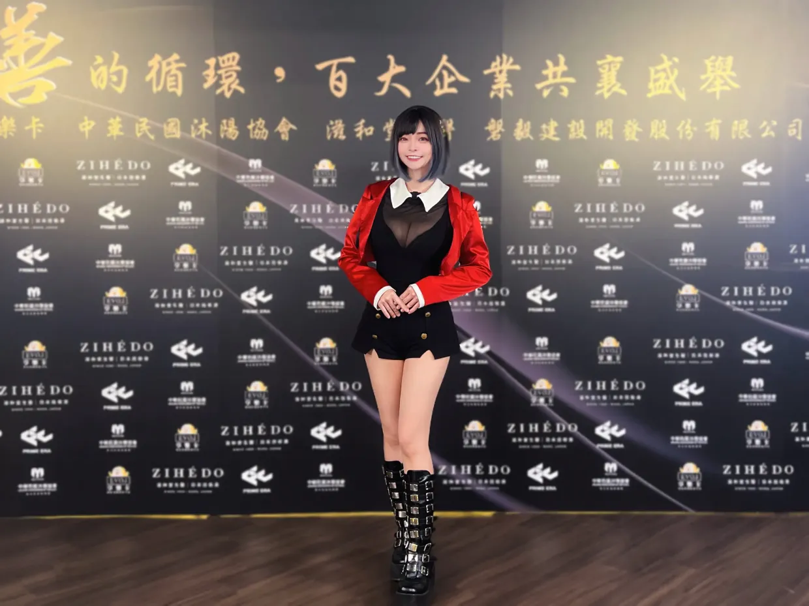
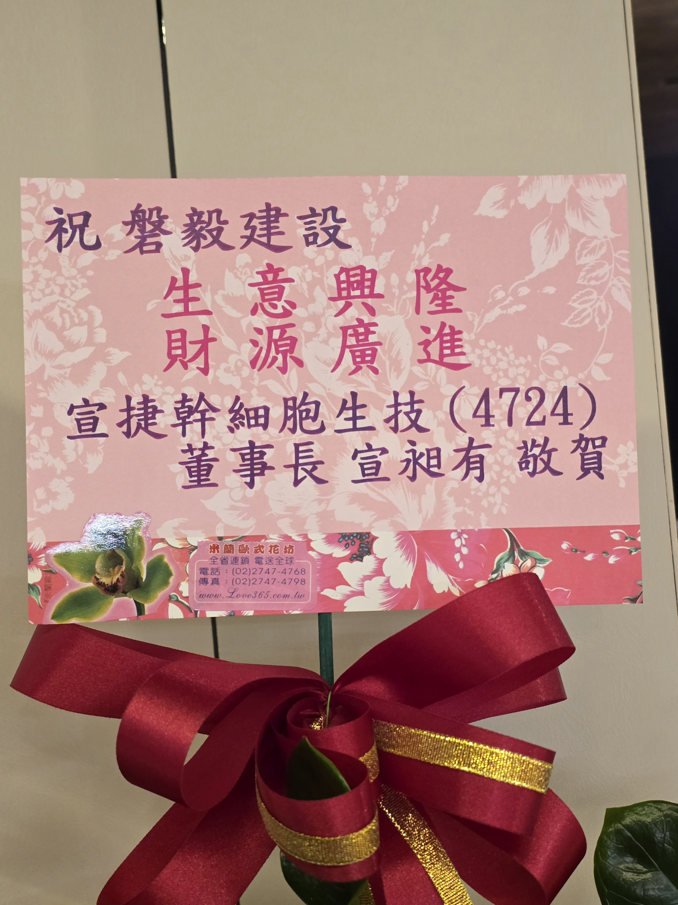

磐毅建設參與百大企業公益行動

磐毅建設長期重視企業永續價值與社會責任，近期參與百大企業公益行動，與多家指標企業及公益夥伴共同投入實際服務。 在本次活動中，除了展現磐毅建設持續參與公益的行動力，也讓外界看見公司在跨界合作與產業交流上的深厚基礎。
值得一提的是，宣捷幹細胞生技（4724）董事長宣昶有特別敬贈祝賀花禮，表達對磐毅建設的祝福與支持。 這份心意不僅象徵雙方良好情誼，也進一步突顯磐毅建設在企業界所獲得的重視與肯定。
本次公益行動重點
- 參與災後重建與環境整理行動
- 前往教養院陪伴身障朋友
- 支持弱勢兒童相關公益捐助
- 參與流浪動物照護與物資支持

產業交流與祝賀花禮

圖為宣捷幹細胞生技（4724）董事長宣昶有敬贈磐毅建設的祝賀花禮，卡片上寫有「祝 磐毅建設 生意興隆、財源廣進」， 不僅傳遞開幕祝福，也展現雙方之間的良好情誼與深厚連結，讓外界看見磐毅建設在產業界所獲得的高度肯定。
本次公益行動涵蓋多個面向，包括災後重建支援、教養院關懷、弱勢兒童物資支持與動物保護等。 我們相信，企業的價值不只體現在建設本業，也體現在持續回應社會需要的行動之中。
共同響應夥伴
依據相關媒體報導，本次公益行動集結來自金融、建設、生技、法律、室內設計與醫療等領域的重要夥伴， 共同投入公益服務，也進一步展現磐毅建設在跨界交流與企業合作上的能量與信任基礎。
媒體報導
本次公益行動獲多家媒體關注，以下依媒體影響力與露出屬性整理，作為活動對外資訊與第三方報導參考。
企業理念
磐毅建設將持續在本業之外，關注能為社會帶來正向影響的實際行動， 讓企業發展與社會責任並行，累積值得長期信任的品牌價值。